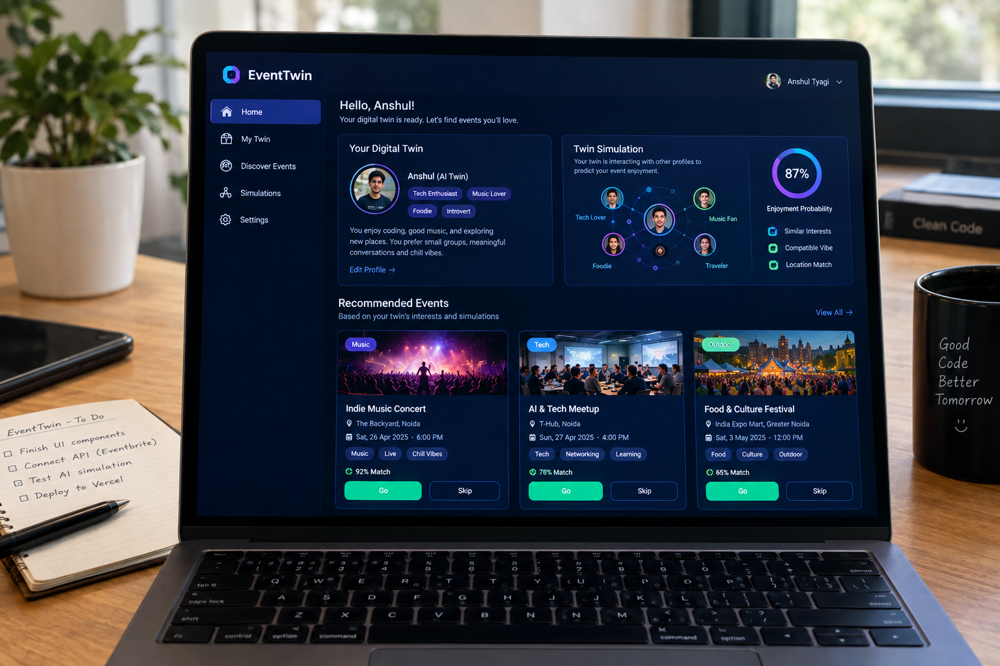
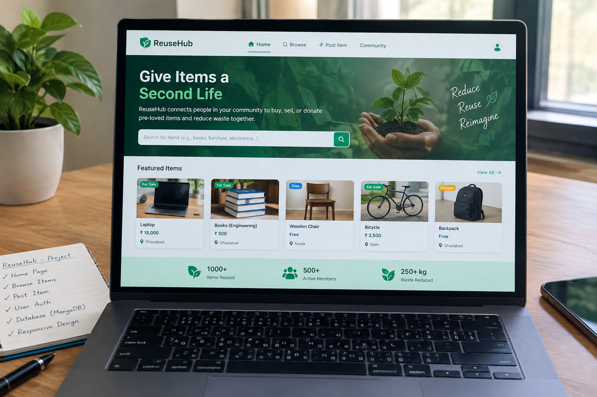
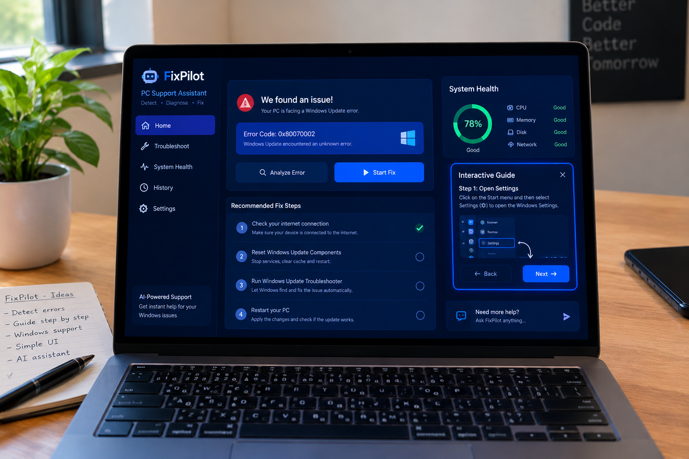
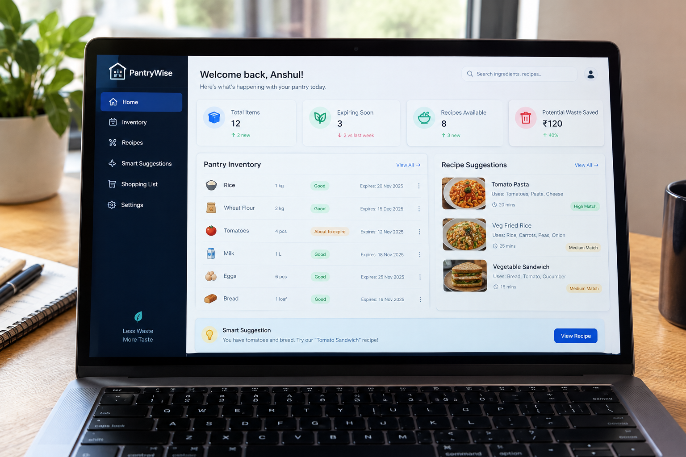
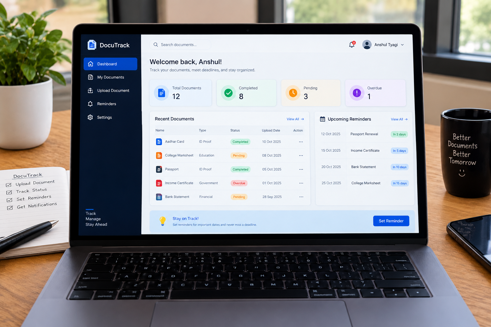

Java
Object-oriented programming
Primary focusHello, I'm
A developer focused on building useful, reliable software. I enjoy solving problems with Java and turning ideas into clean, user-friendly digital experiences.
MY TOOLKIT
A growing set of tools for building software and working with data.
Object-oriented programming
Primary focusProgramming & scripting
Programming fundamentals
Web structure & styling
Interactive web experiences
NoSQL database
Relational databases
Data analysis & dashboards
LEARNING & ACHIEVEMENTS
Courses completed to strengthen my development skills.
UNSTOP · CERTIFICATE OF COMPLETION
Completed the ReactJS course provided by Unstop.
View certificate ↗UNSTOP · CERTIFICATE OF COMPLETION
Completed the C Programming Complete Guide course provided by Unstop.
View certificate ↗SELECTED WORK
A selection of project names from my portfolio. Descriptions are starter text—update them to match your actual features.

A concept for discovering events and helping people coordinate plans around shared interests.
View on GitHub ↗
A reuse-focused platform concept for giving useful items a second life through sharing or exchange.
View on GitHub ↗
A service-management concept designed to make reporting issues and tracking fixes simpler.
View on GitHub ↗
A pantry-planning concept to organize ingredients, keep track of supplies, and reduce food waste.
View on GitHub ↗
A document-tracking concept for organizing records and making their status easier to follow.
View on GitHub ↗HAVE AN IDEA?
I'm open to learning opportunities, internships, and collaborating on meaningful projects.
Get in touch ↗MY RESUME
Download my resume for a snapshot of my education, skills, and projects.
Add your latest PDF as assets/Anshul-Tyagi-Resume.pdf to activate the resume download.
GET IN TOUCH
Interested in an internship, a project, or a conversation about development? Feel free to reach out.